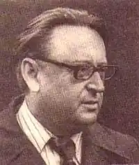
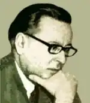

Народився письменник 24 червня 1924 року у родині київських лікарів. Дитинство Богданчика минуло у місті Ізяслав на зелених берегах річки Горинь під опікою діда-лісника. Саме дід навчив його слухати шурхіт листя, спостерігати за лісовими мешканцями, любити та розуміти природу. Будучи від народження дуже чуйним хлопцем, Богдан допомагав батькові рятувати та лікувати поранених птахів — ворон, перепілок, лелек. Часто в їхній домівці зимували маленькі козенята, зайченята, їжачки, а навесні їх урочисто відпускали на волю. Хоча батьки Богдана працювали з ранку до пізнього вечора у лікарні, але вони завжди знаходили час для дитини. Тато сам вигадував і розповідав синові казки, героями яких, зазвичай, були птахи, а мати чарівним голосом наспівувала пісень. Зростав хлопець в атмосфері любові, затишку та казки.
Згодом батьків Богдана направили працювати на Київщину —спочатку до Ірпеня, потім до Бишева. У Бишеві він пішов до школи, займався у літературному гуртку, який вела вчителька української мови та літератури. Саме вона першою розгледіла літературний талант у хлопця, а коли він написав свій перший вірш, порадила йому опублікувати вірш у районній газеті. Згодом, потай від Богдана, вчителька декілька віршів надіслала на літературний республіканський конкурс. Юного літератора преміювали поїздкою до Ленінграда. З того часу писати та друкуватися він не припиняв. У старших класах вірші підлітка друкували в дитячих газетах "На зміну", "Юний ленінець" тощо.
У 1941 році Богдан закінчив з відзнакою школу, а 21 червня з класом поїхав на екскурсію до Канева, де його застав перший день війни з фашистськими загарбниками. Батьки Богдана одразу ж були мобілізовані на фронт, а юнака направили на навчання до Орджонікідзенського піхотного училища. У 1942 році він уже брав участь у бойових діях на Кавказі, та у жовтні цього ж року був важко поранений. Після одужання 1943-го року знов пішов на фронт і воював до кінця війни. У перервах між боями Богдан Чалий писав статті та вірші для армійських газет. У 1945 році під час боїв за Франкфурт на Одері майбутній письменник під пострілами німців врятував з вогню білого коня. Залишивши тварину собі, письменник дав йому ім'я — Одер. Часто виконуючи різні доручення командування, він їздив на ньому по місту. На Одері Б. Й. Чалий прибув до табору, де було зібрано кілька тисяч дітей різних національностей, колишніх полонених, але одного віку, десь років 12-13. Письменник привозив для них їжу, годував їх, співав їм пісень, вчив і дітей співати. Мови у них були різні, але пісню діти розуміли. Так він зі своїм конем увесь час був беззмінним годувальником та охоронцем колишніх малих бранців. З війни усі члени родини письменника повернулися після поранень, але живі — пощастило. По війні Богдан Йосипович працював у редакціях піонерської газети "Зірка", журналу "Піонерія", а з 1951 року очолив редакцію журналу "Барвінок", де пропрацював 23 роки. У цій дитячій пресі друкували його вірші для дітей. У 1947 році виходить друком перша збірочка поета для дітей "Ясного сонячного ранку". Багато подорожуючи, а він об'їхав мало не увесь світ, письменник невтомно писав книжку за книжкою, які користувалися неабиякою популярністю: "Завжди напоготові" (1949), "Військовий шлях", "Діти миру" (1951), "Ми навіки подружили" (1954), "Хороші імена" (1959), поеми "Весняний шлях" (1960), "Космонавт" (1961) тощо. З-під його пера виходили вірші, проза, п'єси, сценарій фільму "Закон Антарктиди". Саме Богдан Чалий вигадав образ Барвінка, який став національним літературним казковим героєм. У співавторстві з Павлом Глазовим написав першу казку "Про відважного Барвінка і коника Дзвоника", яка мала шалений успіх. Невдовзі письменник написав продовження пригод. За другу казку "Як Барвінок і Ромашка у вирій літали" та за книжку "Ласкаво просимо" у 1972 році Б. Чалому було присуджено премію імені Миколи Островського. А третю казку "Барвінок і весна" у 1974 році внесено до Почесного списку IBBY. А далі ще і ще були Барвінкові пригоди. Останню, сьому книжку пригод "Барвінок та далекі сузір'я" видано 2002 року. 20 травня 2008 року, у віці 84 роки пішов у вічність відомий дитячий казкар-патріот Богдан Йосипович Чалий. Поховали його в селі Рудики під Києвом. Джерело: https://chl.kiev.ua/default.aspx?id=6647